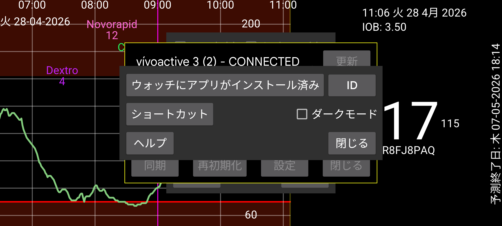

Kerfstok のソースは https://www.juggluco.nl/Kerfstok/Kerfstok-source.html からダウンロードできます。ユーザーは自由に変更できます。各ウォッチアプリには固有の識別子があります。識別子がデフォルトと異なる場合、Juggluco がウォッチアプリと通信するためにはその識別子を知る必要があります。異なる識別子を指定するには ID を押して 32 文字の 16 進文字列を入力します。1 台の端末上の Juggluco は、1 個のウォッチ上の 1 個のウォッチアプリにのみ接続できます。変更するとデータが失われます。
ショートカットは、特定の値を簡単に入力できるように Garmin ウォッチアプリ Kerfstok に送信されます。
Kerfstok を白地に黒ではなく黒地に白で表示するかどうかを指定します。